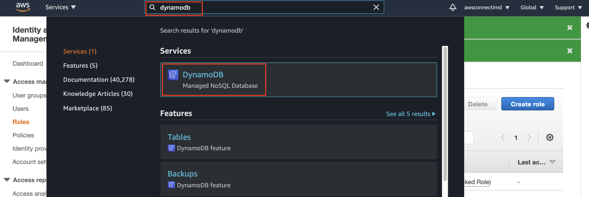
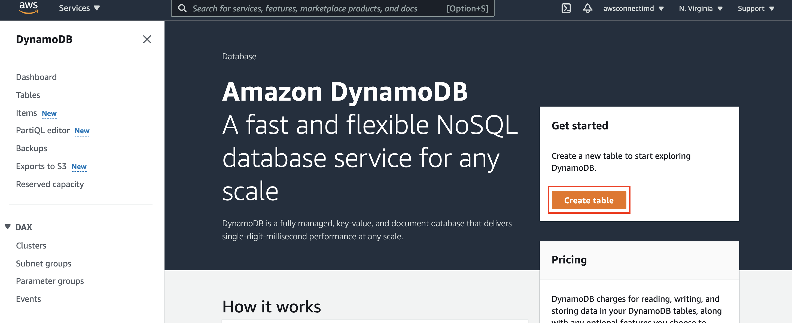
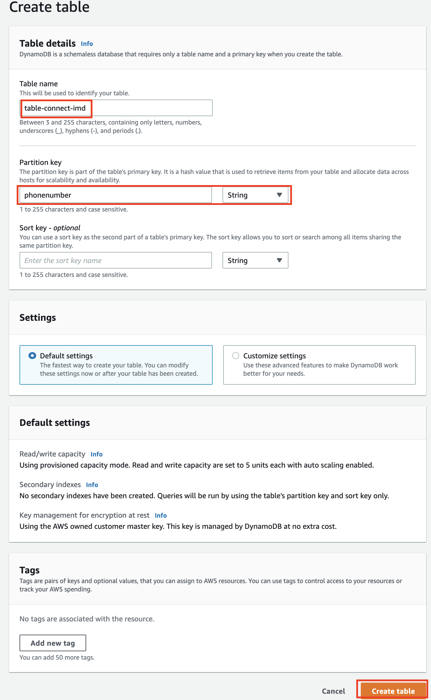
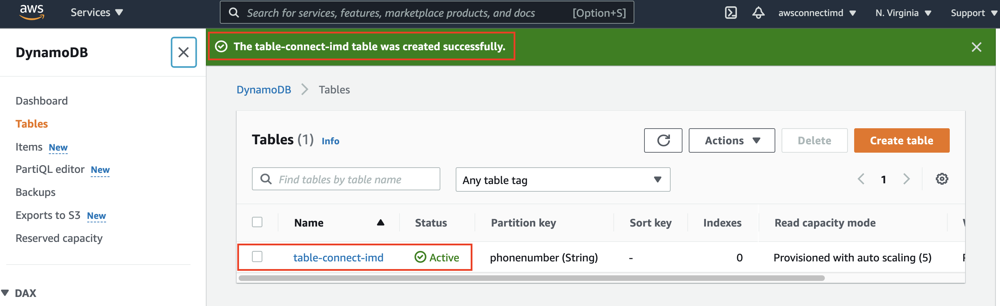
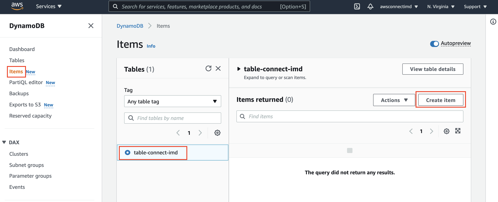
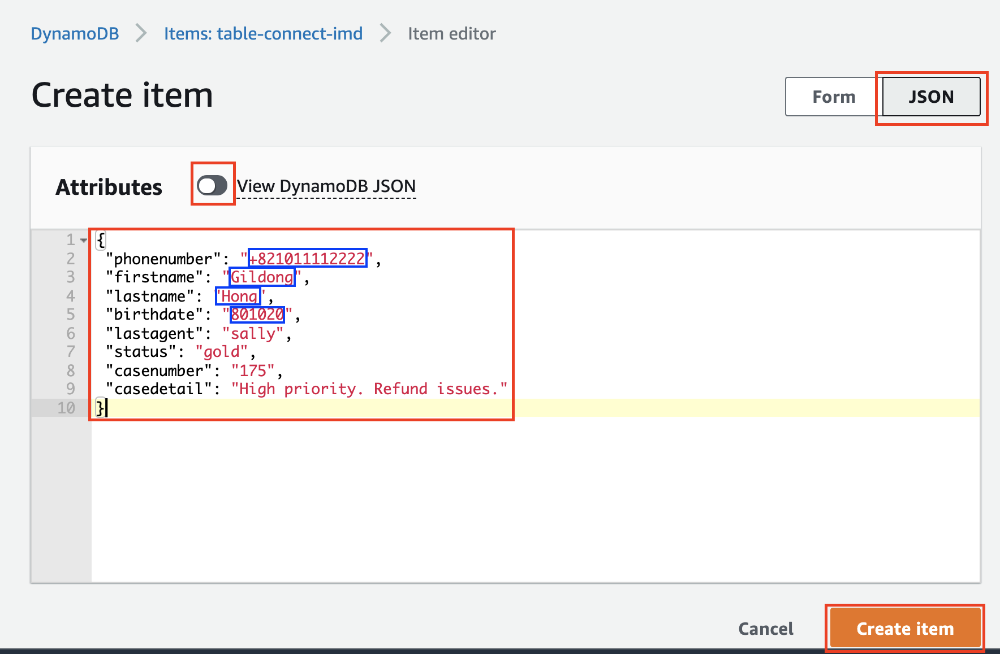

DynamoDB는 AWS의 Managed NoSQL 서비스입니다. 콘솔에서 쉽게 테이블을 만들고 데이터를 입력할 수 있습니다. 좀 더 자세한 내용은 다음 링크를 참고하세요. Amazon DynamoDB: https://aws.amazon.com/dynamodb/
아래 화면과 같이 DynamoDB 서비스로 이동합니다. 
Create table 버튼을 클릭합니다. 
Table name과 Partition key를 입력하고 Create table 버튼을 클릭합니다. Table name 은 아래 Text를 복사해서 정확히 입력합니다. 나중에 쓰이므로 기록해둡니다.
table-connect-imd

잠시 후 Table 생성이 완료됩니다. 아래와 같은 메시지와 Status가 Active 임을 확인합니다. 
이제 Table 내의 Item 을 생성합니다. 왼쪽 메뉴에서 Items 를 선택하고 Create item 버튼을 클릭합니다. 
Item 정보를 JSON 형태로 입력합니다. JSON 항목을 선택하고 View DynamoDB JSON 항목을 클릭하여 비활성화합니다. 이후 아래 Text를 복사하여 정확히 입력합니다. 이후 화면에서 파란색으로 표시한 항목 phonenumber, firstname, lastname, birthdate 는 자신의 정보에 맞게 수정합니다.- 이 수정한 정보는 또한 뒤의 실습에서 사용하므로 기록해둡니다.
{
"phonenumber": "+821011112222",
"firstname": "Gildong",
"lastname": "Hong",
"birthdate": "801020",
"lastagent": "sally",
"status": "gold",
"casenumber": "175",
"casedetail": "High priority. Refund issues."
}

phonenumber 정보는 테스트 전화를 걸 전화 번호를 E.164 포멧으로 정확히 입력해야합니다. ex) 010-1234-5678 => +821012345678
고객 정보 입력을 완료했습니다. 다음 장에서는 Lambda 를 통해 Connect Contact Flow에서 고객 정보를 가져오는 실습을 합니다.